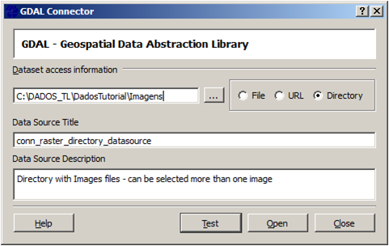

The GDAL Connector is used to defined a connection with a Directory of raster files or with only
one raster File, and as a URL location of raster files. Test will check if
the location has at least one raster file before open it.

Open will make this connection available at Data Source Selector with
the same title specified here, and when selected there will make
available a set of raster files from the directory/file/url informed at Dataset access
Information.